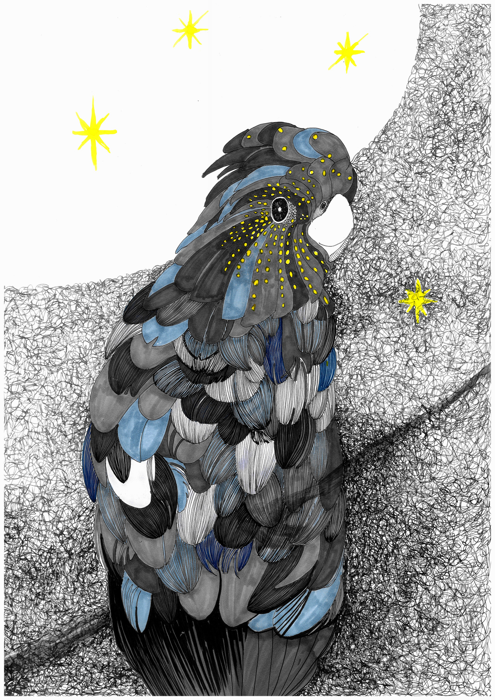
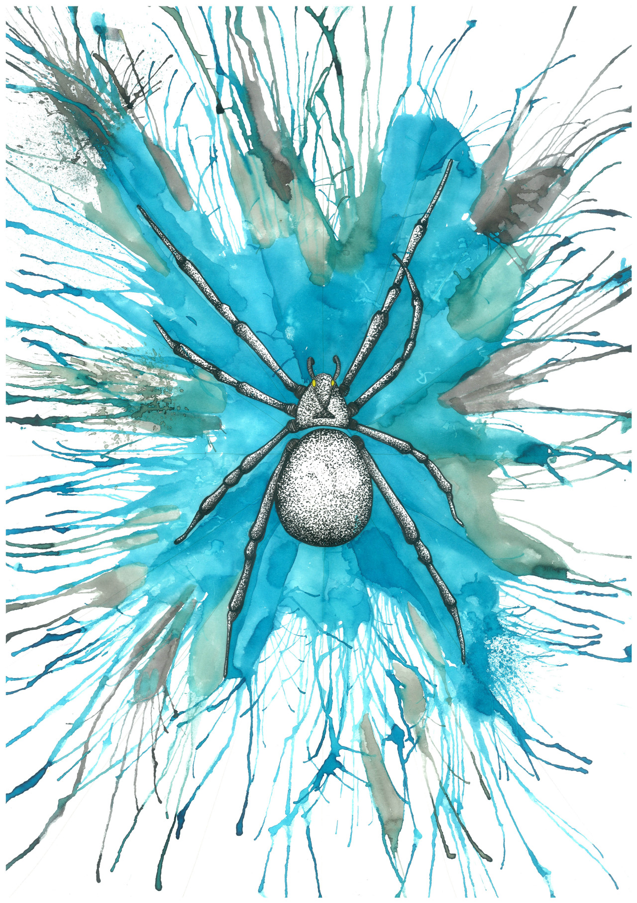
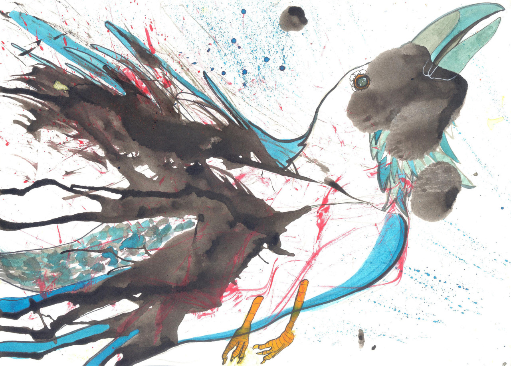

Izabela Zychowicz Illustration
Witam na stronie poświęconej moim pracom graficznym. Znajdziecie Państwo tu wszystkie moje prace, w których głównym motywem są zwierzęta
Zapraszam do zwiedzania
O mnie
Nazywam się Izabela Zychowicz. Z wykształcenia jestem historykiem sztuki ( mgr ) oraz grafikiem warsztatowym ( również mgr ). Swoją wiedże historyczną wykorzystuję pracując w Muzeum Łazienki Królewskie w Warszawie jako kierownik działu muzealnego. Grafikiem warsztatowym nie zostałam, ale w czasie wolnym ( którego niestety nie mam za dużo ) poświęcam się rysowaniu zwierzaków. Mam nadzieję, że spodobają się Państwu moje prace.Moje prace
Tworzę od niedawna - głównie w czasie wolnym. Niestety, pracy mam dużo, ale staram się wykorzystać każdą wolną chwilę. Moje dokonania możecie zobaczyć tutajA w przyszłości...
W przyszłości chciałabym otworzyć galerię ze wszystkimi moimi pracami. Do tej pory miałam tylko jedną wystawę we Wrocławiu
Zapraszam do zapoznania się z kilkoma moimi ostatnimi pracami
  
A pod tym linkiem znajdą Państwo moje wszystkie dotyczasowe prace